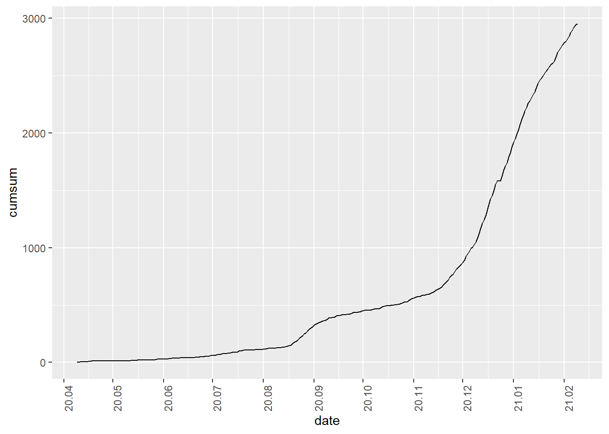

4.11 월별, 분기별, 연별 누적합계 Plot
시계열 데이터는 시간동안의 데이터 흐름을 나타내지만 경우에 따라서 계속된 합계값을 나타내야 할 경우가 있다. 예를 들어 주간별 매출액의 연도별 누적 매출액, 웹사이트의 누적 사용자와 같은 경우이다. 누적값은 앞서 설명한 grouping과 함께 쓰면 더 좋은 결과를 낼 수 있다.
- data.frame : cumsum(), group_by(), collapse_by() 함수
data.frame 객체로 저장된 시계열 데이터에 대한 누적값을 구하기 위해서는 dplyr 패키지의 누적값을 산출 함수인 cumsum() 함수를 사용한다. 데이터를 grouping 하지 않고 전체 데이터에 대한 누적값은 mutate() 함수를 사용하여 cumsum() 함수 결과 컬럼을 생성함으로써 구할 수 있다.
students %>%
mutate(cumsum = cumsum(학생수계)) %>%
select(연도, 학생수계, cumsum)## # A tibble: 22 x 3
## 연도 학생수계 cumsum
## <date> <dbl> <dbl>
## 1 1999-01-01 8658358 8658358
## 2 2000-01-01 8535867 17194225
## 3 2001-01-01 8414423 25608648
## 4 2002-01-01 8361933 33970581
## 5 2003-01-01 8379775 42350356
## 6 2004-01-01 8371630 50721986
## 7 2005-01-01 8371421 59093407
## 8 2006-01-01 8354891 67448298
## 9 2007-01-01 8309932 75758230
## 10 2008-01-01 8187782 83946012
## # ... with 12 more rowsemployees %>%
mutate(cumsum = cumsum(total)) %>%
select(time, total, cumsum) %>%
head(15)## time total cumsum
## 1 2013-01-01 24287 24287
## 2 2013-02-01 24215 48502
## 3 2013-03-01 24736 73238
## 4 2013-04-01 25322 98560
## 5 2013-05-01 25610 124170
## 6 2013-06-01 25686 149856
## 7 2013-07-01 25681 175537
## 8 2013-08-01 25513 201050
## 9 2013-09-01 25701 226751
## 10 2013-10-01 25798 252549
## 11 2013-11-01 25795 278344
## 12 2013-12-01 25248 303592
## 13 2014-01-01 25050 328642
## 14 2014-02-01 25116 353758
## 15 2014-03-01 25463 379221covid19 %>%
mutate(cumsum = cumsum(`0-9세`)) %>%
select(date, `0-9세`, cumsum) %>%
ggplot(aes(date, cumsum)) +
geom_line(aes(group = 1)) +
scale_x_date(date_breaks = "1 month", date_labels = "%y.%m") +
theme(axis.text.x=element_text(angle=90,hjust=1))
전체 데이터에 대한 누적 합계가 아닌 연별, 월별, 주별 등의 주기별 누적합계를 구하려면 앞서 설명한 group_by(), collapse_by()와 함께 사용하면 원하는 기간동안의 누적 합계를 구할 수 있다.
employees %>%
group_by(year(time)) %>%
mutate(cumsum.total = cumsum(total),
cumsum.edu = cumsum(employees.edu))## # A tibble: 96 x 6
## # Groups: year(time) [8]
## time total employees.edu `year(time)` cumsum.total cumsum.edu
## <date> <int> <int> <dbl> <int> <int>
## 1 2013-01-01 24287 1710 2013 24287 1710
## 2 2013-02-01 24215 1681 2013 48502 3391
## 3 2013-03-01 24736 1716 2013 73238 5107
## 4 2013-04-01 25322 1745 2013 98560 6852
## 5 2013-05-01 25610 1774 2013 124170 8626
## 6 2013-06-01 25686 1786 2013 149856 10412
## 7 2013-07-01 25681 1813 2013 175537 12225
## 8 2013-08-01 25513 1811 2013 201050 14036
## 9 2013-09-01 25701 1794 2013 226751 15830
## 10 2013-10-01 25798 1790 2013 252549 17620
## # ... with 86 more rowsas_tbl_time(covid19, index = date) %>%
collapse_by('monthly') %>%
group_by(date) %>%
summarise(누적.1대 = cumsum(`0-9세`),
누적.10대 = cumsum(`10-19세`),
누적.20대 = cumsum(`20-29세`),
누적.30대 = cumsum(`30-39세`),
누적.40대 = cumsum(`40-49세`),
누적.50대 = cumsum(`50-59세`),
누적.60대 = cumsum(`60-69세`),
누적.70대 = cumsum(`70-79세`),
누적.80대 = cumsum(`80세 이상`))## # A time tibble: 302 x 10
## # Index: date
## # Groups: date [11]
## date 누적.1대 누적.10대 누적.20대 누적.30대 누적.40대 누적.50대
## <date> <dbl> <dbl> <dbl> <dbl> <dbl> <dbl>
## 1 2020-04-30 2 4 12 7 7 2
## 2 2020-04-30 3 5 19 11 9 5
## 3 2020-04-30 4 10 24 13 12 11
## 4 2020-04-30 4 13 37 18 13 15
## 5 2020-04-30 6 14 47 20 14 17
## 6 2020-04-30 6 17 54 24 18 20
## 7 2020-04-30 6 21 63 29 21 22
## 8 2020-04-30 9 24 68 30 23 25
## 9 2020-04-30 10 28 77 33 24 27
## 10 2020-04-30 12 28 86 34 25 29
## # ... with 292 more rows, and 3 more variables: 누적.60대 <dbl>,
## # 누적.70대 <dbl>, 누적.80대 <dbl>- tsibble : index_by() 함수
tsibble 객체에 대한 누적합계는 grouping 하여 합계를 산출하는 방법의 sum 함수를 cumsum 함수로 바꾸어주고 summarise()를 mutate() 로 바꾸어 준다. mutate()를 쓰는 이유는 누적합계는 모든 관측값에 필요한 컬럼이기 때문이다.
employees.tsibble%>%
index_by(yearqtr = ~ yearquarter(.)) %>%
mutate(cumsum.qtrly = cumsum(total)) %>%
select(yearqtr, cumsum.qtrly) %>%
head(10)## # A tsibble: 10 x 3 [1D]
## # Groups: @ yearqtr [4]
## yearqtr cumsum.qtrly time
## <qtr> <int> <date>
## 1 2013 Q1 24287 2013-01-01
## 2 2013 Q1 48502 2013-02-01
## 3 2013 Q1 73238 2013-03-01
## 4 2013 Q2 25322 2013-04-01
## 5 2013 Q2 50932 2013-05-01
## 6 2013 Q2 76618 2013-06-01
## 7 2013 Q3 25681 2013-07-01
## 8 2013 Q3 51194 2013-08-01
## 9 2013 Q3 76895 2013-09-01
## 10 2013 Q4 25798 2013-10-01covid19.tsibble[, c(1,3)]%>%
index_by(yearweek = ~ yearweek(.)) %>%
mutate(cumsum.weekly = cumsum(`0-9세`)) %>%
head(10)## # A tsibble: 10 x 4 [1D]
## # Groups: @ yearweek [2]
## date `0-9세` yearweek cumsum.weekly
## <date> <dbl> <week> <dbl>
## 1 2020-04-09 2 2020 W15 2
## 2 2020-04-10 1 2020 W15 3
## 3 2020-04-11 1 2020 W15 4
## 4 2020-04-12 0 2020 W15 4
## 5 2020-04-13 2 2020 W16 2
## 6 2020-04-14 0 2020 W16 2
## 7 2020-04-15 0 2020 W16 2
## 8 2020-04-16 3 2020 W16 5
## 9 2020-04-17 1 2020 W16 6
## 10 2020-04-18 2 2020 W16 8- xts
xts 패키지에서는 누적값을 산출하는 함수를 제공하지 않는다. 그렇기 때문에 누적값을 구하기 위해서는 몇가지 단계를 거쳐야 한다. 먼저 split() 함수를 사용하여 누적값을 적용할 시간단위로 데이터를 분리해준다. 분리한 결과는 list의 형태로 반환되는데 이 결과를 lapply()함수를 이용하여 cumsum() 함수를 각각의 list에 적용시켜 준다. 이 결과는 list의 형태이기 때문에 do.call() 함수를 이용하여 하나의 xts 형태로 다시 묶어 주면 원하는 값을 얻을 수 있다. 이 과정에서 list를 다루는 함수인 lapply()와 do.call() 함수가 사용되었다. 이 두 함수 모두 매개변수로 받은 함수를 각각의 list 요소에 적용하는데 차이점은 lapply의 경우 각각의 list의 모든 행에 대해 매개변수 함수를 적용하는데 반해 do.call은 list의 요소에 대해 함수를 적용한다는 점에서 차이가 있다. 아래의 예에서 lapply()로 전달된 cumsum() 함수는 split()로 분리된 12개의 요소의 각 행(총 1,424개)에 적용되고 do.call로 전달된 rbind() 함수는 split로 분리된 12개의 요소에 적용되기 때문에 단순히 12번 호출된다.
do.call(rbind, lapply(split(employees.xts, f = 'year'), cumsum)) %>%
head(15)## total employees.edu 증감 증감율
## 2013-01-01 24287 1710 NA NA
## 2013-02-01 48502 3391 NA NA
## 2013-03-01 73238 5107 NA NA
## 2013-04-01 98560 6852 NA NA
## 2013-05-01 124170 8626 NA NA
## 2013-06-01 149856 10412 NA NA
## 2013-07-01 175537 12225 NA NA
## 2013-08-01 201050 14036 NA NA
## 2013-09-01 226751 15830 NA NA
## 2013-10-01 252549 17620 NA NA
## 2013-11-01 278344 19413 NA NA
## 2013-12-01 303592 21192 NA NA
## 2014-01-01 25050 1748 -198 -0.8
## 2014-02-01 50166 3534 -132 -0.5
## 2014-03-01 75629 5348 215 0.9